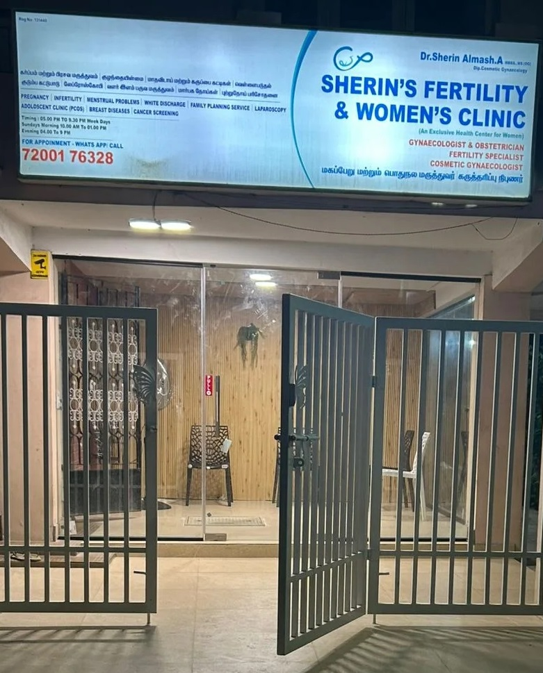
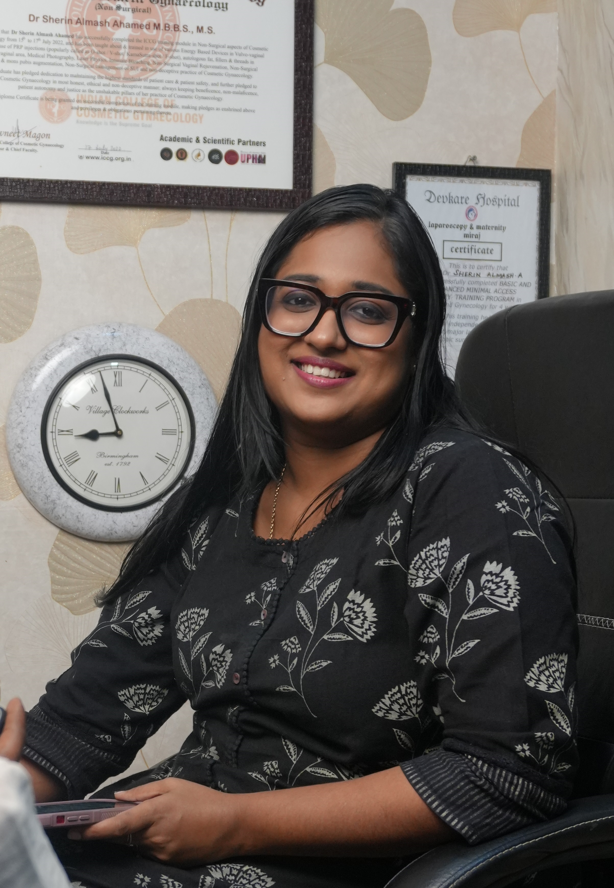
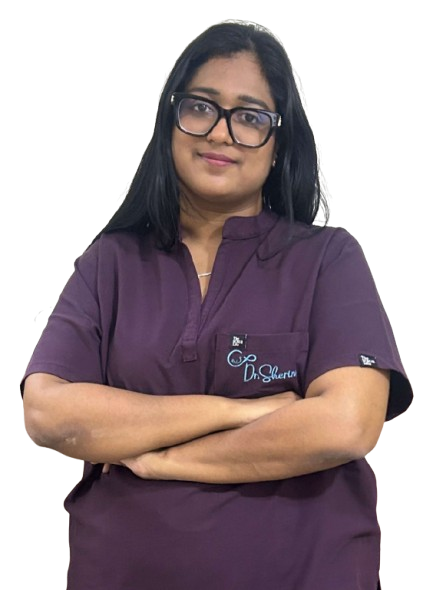
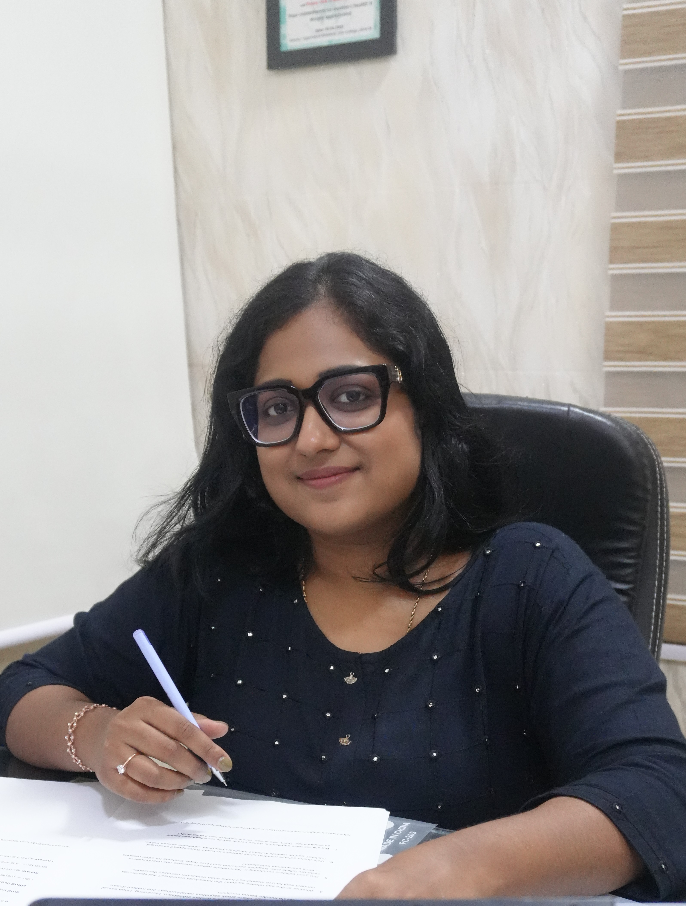
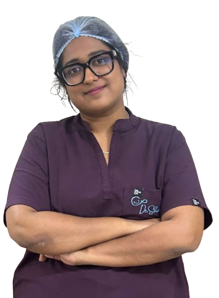
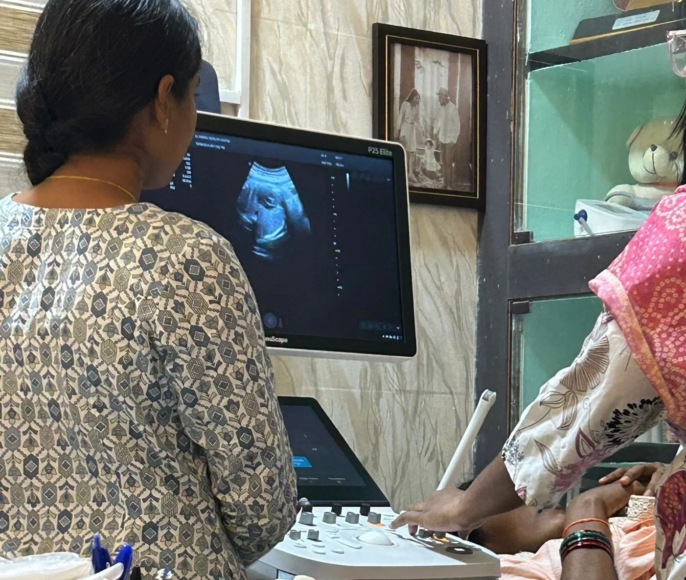
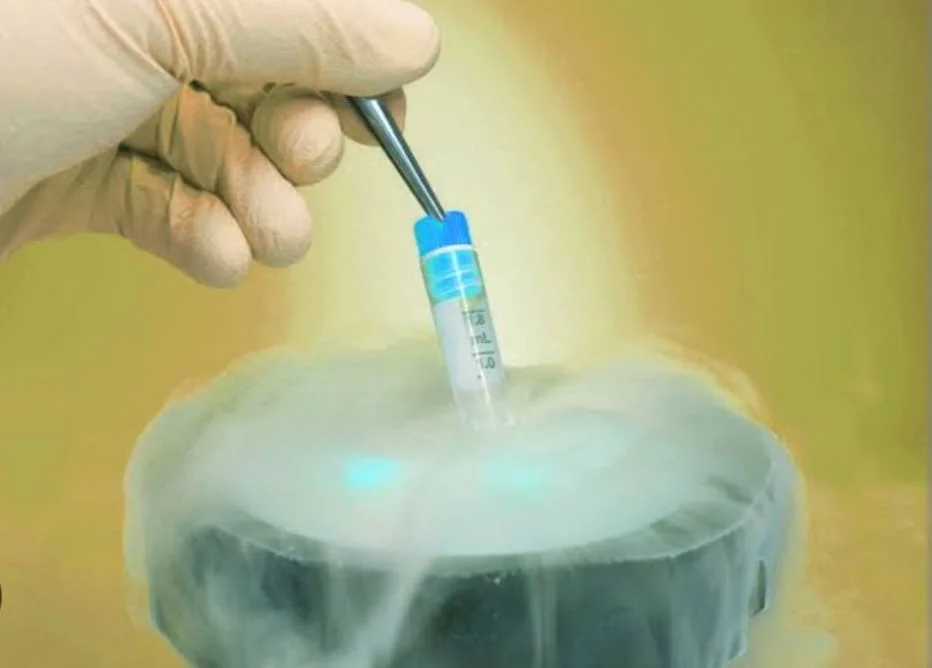

300+
Fertility Consultations Completed
Specialized fertility care built around you — not just your diagnosis.
Where hope grows here, journeys begin with love, From worry to joy, we are with you.
Hundreds of Chennai families have walked in with worry and left with hope. Dr. Sherin makes even the hardest days feel manageable.

Dr. Sherin's Fertility Clinic & Women's Center was founded on a simple belief — every woman deserves world-class care delivered with warmth, honesty, and respect. Located in the heart of Chennai, our clinic is designed to feel less like a hospital and more like a place where you feel genuinely heard.We combine the most advanced fertility diagnostics and treatment technology with a team that truly understands what couples go through on this journey. Whether you are just starting to explore your options or have been trying for years, we meet you exactly where you are — without judgment, without rushing, and without false promises. Our goal is straightforward: to give every patient the best possible chance at the outcome they are hoping for.
Fertility Consultations Completed
Successful Procedures Every Month
Babies Born Every Year
Dr. Sherin Almash is a renowned fertility specialist and gynecologist in Chennai with over 8 years of experience helping couples achieve their dream of parenthood.
Dr. Sherin combination of expertise, qualification, and dedication makes her a leading choice for couples seeking fertility care in Chennai. Her approach combines cutting-edge medical technology with compassionate patient care.
Every number tells a real story. A story of care, commitment, and expertise. Built on years of medical excellence. Backed by trust and patient satisfaction. Focused always on better outcomes.
Happy Couples
Years of Experience
Success Rate
Google Reviews
Journey of excellence, Training & Philosophy in Woman's Healthcare
Started her journey in obstetrics and gynecology at Chettinad Medical College, building a strong foundation in women's healthcare.
Gained extensive experience through significant roles at Apollo Hospitals, Public Health Centre West Mambalam, and Sri Ramachandra Medical College.
Served as Associate Consultant at MGM Healthcare, Chennai, further honing her expertise in high-risk pregnancies and natural birth.
Established Sherins Women's and Fertility Clinic to provide comprehensive, world-class fertility and women's healthcare.

Dr. Sherin has pursued relentless, international-level training to ensure her patients receive care that meets the highest global standards. Her qualifications are not just credentials — they are the result of genuine dedication to her craft and her patients.
Know moreAdvanced Diploma in Reproductive Medicine from Keil university, Germany
Advanced Minimally Invasive Gynecologic Surgery training in Maharashtra
Advanced USG and IVF Ultrasound training at Dr. Nagori's Institute Ahmedabad
Completed in Bangalore, specializing in helping women through their fertility journeys
Certification in vaginal rejuvenation, PRPs, O-Shot from ICCG, Hyderabad
Providing not only expert medical care but also emotional support and respect to every woman.
Driven by a passion for empowering women at all stage of life through comprehensive healthcare.
Treatment protocols based on latest advancements delivered with a patient-centered approach where care is both science and a commitment.
Core Values at Sherin's Clinic
MS.OG, DNB(OBG), DRM(GERMANY), FMAS, FRM
Fertility Specialist, Normal Delivery& Highrisk pregnancy Expert Laproscopic surgeon
8+ years of expertise in natural birth
6.00 PM - 9:30 PM
( Prior Appointment Required )
4.00 PM - 5:00 PM
On Appointment Basis
3.00 PM - 5:00 PM


Fertility Specialist
Book ConsultationMBBS, DGO
Senior Gynaecologist
25+ years of expertise in natural birth
Morning 10:30 AM to 1:00 PM


Discover what makes Dr. Sherin the preferred choice for fertility treatment in Chennai.
Achieve higher success rates with our advanced fertility treatments and personalized care approach.
Over 7 years of specialized experience in fertility treatment and reproductive medicine.
State-of-the-art equipment and latest fertility treatment technologies for better outcomes.
Empathetic approach with emotional support throughout your fertility journey.
Comprehensive fertility service designed to help you achieve your dream of parenthood.

In Vitro Fertilization with advanced techniques for higher success rates
Intrauterine insemination as a less invasive fertility option
Specialized care for male fertility problems and treatments

Advanced reproductive image and monitoring
Complete pregnancy care and high risk pregnancy management

Intracytoplasmic Sperm Injection for male fertility issues
Comprehensive evaluation and treatment of female fertility issues.

Egg and sperm freezing for future family planning

Minimally invasive diagnostic and surgical procedures.
Take a look at our state-of-the-art facilities and comfortable environment.
Read testimonials from our satisfied patients who achieved their dream of parenthood.
I would like to express my heartfelt gratitude to Dr. Sherin for the exceptional care and support. Your professionalism, patience, and empathetic approach made me feel completely at ease throughout the entire process
Doctor is having good knowledge, kind behaviour and patience in hearing and replying to the patient's queries. Even for her regular patient, sometimes she gives generous advises compromising her fees. We need to follow her medicines and instructions for better results. It was appreciable when she conducted dietician advises for free of cost. Dr. Sherin spends enormous time in clarifying all her patient's doubts, this shows her importance towards patient's health.
I recently had laparoscopic surgery performed by Dr. Sherin and I'm more grateful for the care I received from the day 1 of consultation till the post follow up. Dr Sherin was professional, patient and explained all process step by step. The surgery was smooth and recovery was so quick with minimal pain. The entire team was kind and supportive.
Dr. Sherin explained each process of the treatment and cleared all doubts. Overall happy and satisfied. The service is excellent and really helpful in making the right choice.
Dr. Sherin is an exceptional gynecologist who truly listens to her patients and makes them feel comfortable. Her dedication to patient care is remarkable. Highly recommended!
Book your fertility consulting today and take the first step towards parenthood.